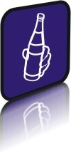

|
|  |
Social events represent a firmly established tradition
on ICPS, and they will certainly be upheld in Split as well. Social
events include various parties (Welcome, Farewell, National, Costume),
excursions, city tour and team sports.
|
The excursions will take place on Saturday, 15th August,
and we offer seven different excursions to choose from. To choose on which
excursions you would like to go, please login to your account and at the
very bottom you will see a new section where you can choose your first
and second choice of excursion. Please make this choice as soon as possible,
since the number of seats for most of the excursions is limited and will
be assigned on a first-come, first-served basis having in mind your chosen
preferences. If you do not choose you excursion preferences online, you
will be asked to choose them at the registration desk in Split. Also,
some trips have extra charges, which can be paid at the registration desk.
In general, if you would prefer not to go to any of these trips, and would
just like to enjoy the beach for the day, we recommend the Bačvice
beach in Split, or any other city beach. Of course, you can go to beach
during any free time slots during the conference. However, have in mind
that the sun in Split is very strong at this time of the year and we strongly
suggest using a sun lotion (factor 30+) whenever you go swimming or on
the beach (either on one of our trips or on your own).
Zadar
Zadar is a Croatian coastal city, the centre of Zadar
county and the wider northern Dalmatian region. Zadar faces the islands
of Ugljan and Pašman, from which it is separated by the narrow Zadar
Strait. The promontory on which the old city stands used to be separated
from the mainland by a deep moat which has since become a landfill. The
harbor, to the north-east of the town, is safe and spacious. Zadar is
the seat of a Catholic archbishop.
Zadar appeared for the first time in history in the
4th century B.C. as a settlement of the Illyrian tribe of Liburnians.
Today Zadar is a preserved monument of various historical times and cultures
that have placed their boundaries and visible outlines of their urban
appearance. Zadar is a city rich in spiritual and material culture, as
well as in a touristic identity created in the present. It was created
around the Roman forum, a city inside well-kept walls, a city of old Croatian
monuments.
The Sea organ is an architectural object located in
Zadar, and an experimental musical instrument which plays music with the
help of sea waves and tubes located underneath a set of large marble steps.
The waves create somewhat random but harmonic sounds.
The Greeting to the Sun consists of three hundred multi-layered
glass plates placed on the same level with the stone-paved waterfront
in the shape of a 22-meter diameter circle. Under the glass conduction
plates there are photo-voltage solar modules through which symbolic communication
with nature is made, with the aim to communicate with light, just like
the Sea Organs do with sound.
On this excursion you will be able to see all monuments
and other special sights in Zadar, like Sea organ and Greeting to the
Sun.
Extra charge for this trip is 10 €.
Šibenik
Šibenik (Sebenico) is a historic town in Croatia,
population 51,553 (2001). It is located in central Dalmatia where the
river Krka flows into the Adriatic Sea. Šibenik is a political, educational,
transport, industrial and tourist center of Šibenik-Knin county.
Šibenik lies almost in the middle of the Croatian Adriatic Coast,
in the picturesque and indented bay around the mouth of the river Krka,
one of the most beautiful Karst rivers in Croatia.
Šibenik was mentioned for the first time under
its present name in 1066 in a Charter of the Croatian King Petar Krešimir
IV who lived in the fortified citadel Sv. Mihovil. For a period of time,
it was a seat of the Croatian King. For that reason, Šibenik is also
called "Krešimirov grad" (Krešimir's city).
Venetians held Šibenik from 1116 - 1124 and from
1125 - 1133. Hungarian-Croatian king Stjepan IV granted it autonomy in
1167. After a short period of Byzantine rule to 1180, Croatian kings,
Venetia, Bosnian king Stjepan Tvrtko and duke Hrvoje Vukčić Hrvatinić
alternately ruled the town. It was again under Venetian rule from 1412-1797.
Since then to 1918, except for the period of French occupation, it is,
together with the rest of Dalmatia, under Austrian rule. At the end of
the First World War it was occupied by Italy but it was returned to the
mother country under provisions of Rapal Agreement in 1920. Since 1991.,
Šibenik is part of the independent Croatian Republic.
The central church in Šibenik, the Cathedral of
St. James, lifetime work of Juraj Dalmatinac, is on the UNESCO World Heritage
list. Several successive architects built it completely in stone in the
15th and 16th centuries, both in Gothic and in Renaissance style. The
interlocking stone slabs of the Cathedral's roof were damaged in war in
1991 but the damage has since been repaired. Šibenik is also surrounded
by 4 fortresses, three on the land (saint Mihovil, saint Ivan, fortress
„Šubićevac“) and one on the sea (saint Nikola).
The town of Šibenik was also the first city in
the world who got a polyphase system of alternating current. The system
supplied 340 street lights and some electrified houses in the town.
On this excursion you will be able to see all the historical
monuments, swim on one of the most beautiful beaches in Croatia (Rogoznica)
and see the lovely Dragon's Eye lake. The lake is considered to be a natural
bioreactor with intensive biochemical processes taking place there.
Extra charge for this trip is 8 €.
Rafting on the river Cetina
Rafting on the river Cetina lasts 3-4 hours on a 9
km long route which ends in a restaurant "Radmanove mlinice"
(Radman's Mills). All you need to bring with you is a swimming suite,
some shoes suitable for water and dry clothes so you can change afterwards.
If you want to take pictures we recommend a waterproof camera. It is advisable
not to take valuable objects (jewelry, watches) and if you wear glasses,
tight them by a thin rope.
A guide is assigned to every crew. He will give you
all the equipment you need, which includes paddle, helmet and buoyancy
aid. You will be also given a quick tutorial for basic rafting skills.
This is a pool drop river and on the scale 1-6 it's classified as a 2-3
which means that the rapids are easy and medium.
This river has found it's way through fields and cliffs creating rapids,
waterfalls, lakes surrounded by wild vegetation and canyons. The natural
harmony in and around this river is still unharmed. Here you'll see nature
in its best: beautiful lakes, vegetation cliffs, waterfalls, caves and
more.
After rafting we will bring you to the lawn where you
can have lunch and enjoy being surrounded by beautiful nature, chill out,
play cards or sports.
Extra charge for this trip is 20 €.
Makarska
Makarska is a small town on the Adriatic
coastline of Croatia, about 60 km southeast of Split and 140 km northwest
of Dubrovnik. It is a tourist centre, located on a horseshoe shaped bay
between the Biokovo mountains and the Adriatic Sea. The city is noted
for its palm-fringed promenade, where fashionable cafés, bars and
boutiques overlook the pretty harbour where many pleasure craft are moored.
Adjacent to the beach are several large capacity hotels as well as a camping
ground.
The center of Makarska is an old town with narrow stone-paved
streets, a main church square where there is a flower and fruit market,
and a Franciscan monastery that houses a sea shell collection featuring
a giant clam shell. Makarska is the center of the Makarska riviera, a
popular tourist destination under the Biokovo mountain.
Main sights in Makarska include:
• St. Mark's
Cathedral (17th century), in the Main Square
• Statue of
the friar Andrija Kačić Miošić by the famous Croatian sculptor Ivan
Rendić
• St. Philip's
Church (18th century)
• St. Peter's
Church (13th century), situated on the Sv. Petar peninsula, rebuilt in
1993
• The Franciscan
monastery (16th century). It houses a library with numerous books and
rare incunabula's and a famous, world known collection of shells from
all over the world, collected in a Malacological Museum from 1963
• Napoleon
monument, erected in the honour of the French Marshal Marmont in 1808
• The Baroque
Ivanišević Palace
• Villa Tonolli,
which is home to the Town Museum
On this excursion you will be able to see all historical
monuments and other special sights in Makarska, and swim on one of the
most beautiful beaches in Makarska called Brela (bring swimming suit with
you).
Extra charge for this trip is 8 €.
Solin-Kaštela-Trogir
Solin developed on the location of ancient town of
Salona which was the capital of the Roman province of Dalmatia and the
birthplace of Emperor Diocletian. After the arrival of Avars and Slavs
in the 7th century, the town was destroyed, and its refugees moved to
settlement in and around Diocletian's palace, "Spalatum" (Split),
turning it into a fortified town. You will walk trough the old part of
Solin and see the river Jadro.
Kaštela is a series of seven towns in central
Dalmatia. The Kaštela region with its Mediterranean tone, picturesque
landscape and unique composition of natural beauty attracted people since
prehistoric times. From ancient Greek sailors, Roman patricians, Croatian
kings, rulers, Venetian royals to the present sun and sea lovers, as well
as mysterious legacies from the past. You will able to see the old castle
Vitturi and the botanical garden in Kaštel Lukšić and have lunch
there.
Trogir is a historic town and harbour on the Adriatic
coast in Split-Dalmatia County. The historic city of Trogir is situated
on a small island between the Croatian mainland and the island of Čiovo.
Since 1997, the historic centre of Trogir has been included in the UNESCO
list of World Heritage Sites. You will walk trough the old part of the
town and spend some time swimming on the beach Medena. Take the swimming
suits with you!
There is no extra charge for
this excursion.
Sinj
Sinj is a small city 30 km north of Split. Like the
rest of Dalmatia, it has had a very turbulent history. In August 1715
the Turks attempted to retake the Sinj fortress. Although outnumbered,
the inhabitants of Sinj defeated the Turks after a week-long battle. The
defendents were convinced that the presence of the painting of Our Lady
help them to thwart their more powerful adversaries. The Feast of the
Assumption (Velika Gospa, August 15) is, therefore, especially significant
for the residents of Sinj and many other believers from all over the country.
If you would like to participate in the Mass, see the
castle fortress and the rest of the rich cultural heritage of this beautiful
city, apply for this trip. The number of seats for this excursion is not
limited, since we would go to Sinj via regular bus line.
There is no extra charge for this excursion
(except the cost of the regular bus tickets).
Duće beach
For all those that would like to chill out on Saturday,
we recommend the Duće beach. Duće beach, with its long shallow
sandy coast, is the favourite swimming place of numerous guests. The beach
has natural shade and deck chairs, pedallins and boats can be rented.
The beach is about 20 km from Split, so our drivers
will take you there and pick you up at the end of the day. There is no
limit to the number of seats and no guided tour for this excursion - simply
swim and sunbathe on this lovely beach all day!
There is no extra charge for this excursion.

We will take the participants on a special tour of Split on Thursday,
August 13th, during which they will see some of the oldest and best preserved
archaeological sites in Croatia. There will be enough free time for individual
sightseeing and exploration. The details of the city tour and a map will
be provided separately. |
|
|


{kind=link}
{kind=link}
{kind=link}
{kind=link}
{kind=link}
{kind=link}
{kind=link}
{kind=link}
{kind=link}
{kind=link}
{kind=link}
{kind=link}
{kind=link}
{kind=link}
{kind=link}
{kind=link}
{kind=link}
{kind=link}
{kind=link}
{kind=link}
{kind=link}
{kind=link}
{kind=link}
{kind=link}
{kind=link}
{kind=link}
{kind=link}